博客搭建+美化（巨细版本）
一、博客环境搭建
QQ 交流群(及文件下载):478404205
1.下载Git和Node.js
1.Node.js的安装与配置
首先去Node.js官网 下载node.js的安装程序，根据你电脑系统的配置信息，下载对应的安装程序，然后开始进行下面的步骤。
下载好与电脑系统对应的安装程序后，开始安装流程：
1.1.1 打开下载好的Node.js安装程序，点击Next，进行下一步的安装；
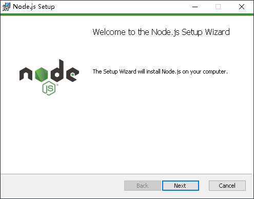
1.1.2 将”I accept the terms in the License Agreement”前面的复选框勾选，同意安装协议，再点击Next，进行下一步操作；
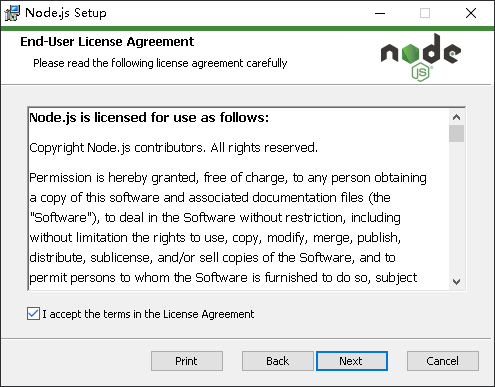
1.1.3 选择Node.js安装程序的安装位置，在这里我以”C:\Program Files\nodejs”为例，点击Next，进入下一步操作；
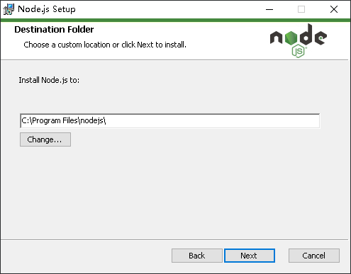
1.1.4 选择安装的模块和功能，这里全部安装，并添加到系统环境变量 ，继续点击Next，进入下一步操作；
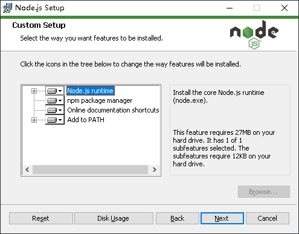
1.1.5 这一步可以跳过，这个选项的意思是安装一些编译本地模块的工具，比如python，C/C++等，点击Next，进入下一步；
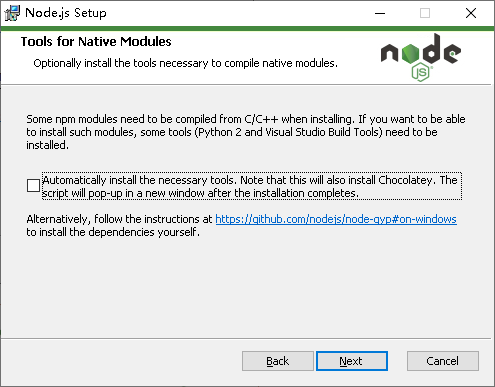
1.1.6 点击”Install”，等待Node.js安装完成；
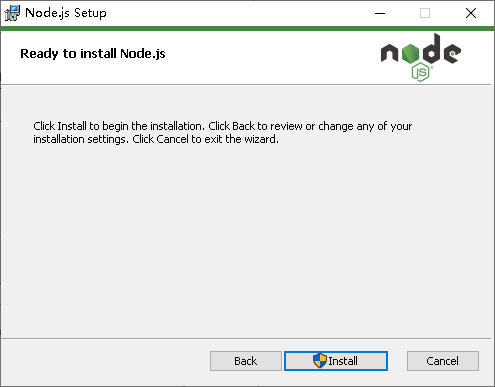
1.1.7 当看到下图所显示的情况，Node.js就成功安装完毕。
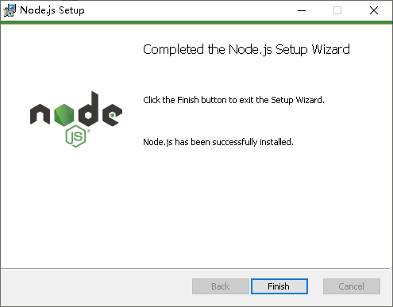
1.1.8 验证安装，并测试Node.js是否加入环境变量，当出现如下图的情况，Node.js安装大功告成。
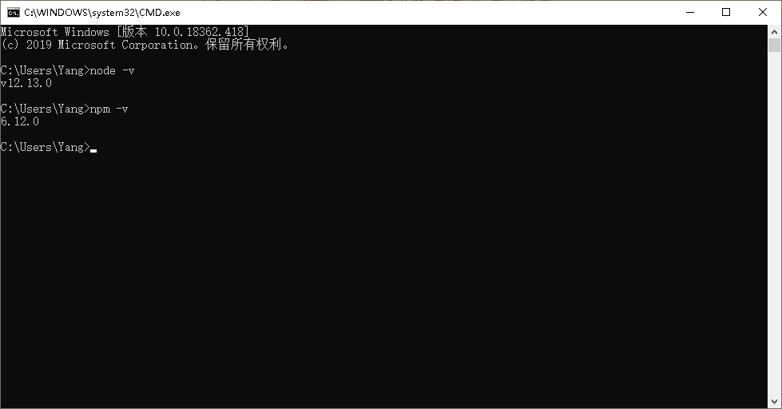
如果执行node -v报错的话，那么手动将Node.js的安装路径添加到环境变量中，右击点击我的电脑 ->属性 -> 高级系统设置 -> 环境变量，在系统变量下找到名为path的变量名，如下图：
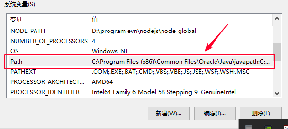
选中path，或者双击，然后将你node.js的安装路径放在path变量值的最后面，如果添加之前path值最后有 英文的分号，则直接将路径添加进去即可，如果没有，先添加分号，然后点击保存，回到桌面，打开cmd（Win+R），执行node -v，看是否成功。
1.1.9 设置npm的镜像源：
# 查看npm的配置
npm config list
# 默认源
npm config set registry https://registry.npmjs.org
# 临时改变镜像源
npm --registry=https://registry.npm.taobao.org
# 永久设置为淘宝镜像源
npm config set registry https://registry.npm.taobao.org
# 另一种方式，编辑 ~/.npmrc 加入下面内容
registry = https://registry.npm.taobao.org
1.1.10 设置npm的内置路径——>全局模块路径和缓存路径（可选）
如果不改变内置路径也可，除非你的C盘空间足够bigger，这一步可以略过，不改变的话，它的路径在：
npm包全局目录：C:/Users/[username]/AppData/Roaming/npm/node_modules
npm包全局命令目录：C:/Users/[username]/AppData/Roaming/npm
npm实际去找全局命令的目录：C:/Users/[username]/.npmrc 文件内容的prefix值
npm包全局cache目录：C:/Users/[username]/.npmrc 文件内容的cache值
首先在你Node.js的安装位置，新建两个文件夹，node_global和node_cache，我的路径是：
C:\Program Files\nodejs\node_global
C:\Program Files\nodejs\node_cache
然后分别执行的命令就是：
npm config set prefix"C:\Program Files\nodejs\node_global"
npm config set cache "C:\Program Files\nodejs\node_cache"
然后在配置环境变量，右击我的电脑 ->属性 -> 高级系统设置 -> 环境变量同样的位置，在用户变量的地方，找到path变量进行修改，修改值如下图：
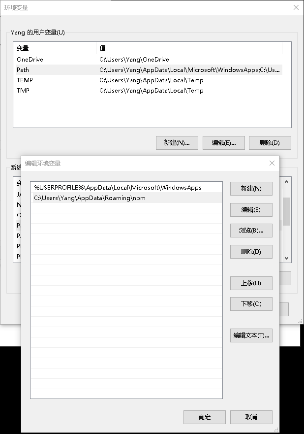
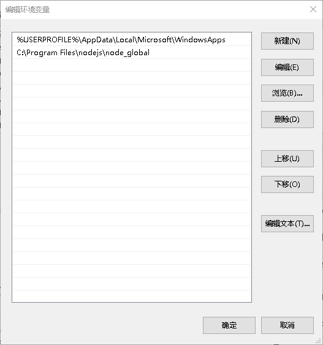
然后就大功告成了，Node.js就安装完毕了，下面开始Git安装。👇👇👇
1.2 Git的安装与配置
首先就是去Git官网下载Git，根据你电脑系统的配置信息，下载对应的安装程序，然后开始进行下面的步骤。
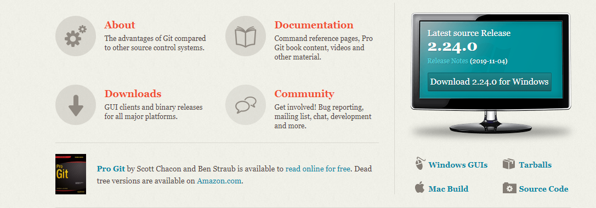
1.2.1 下载好Git的安装包，开始安装，打开安装包，出现如图的界面，点击Next：
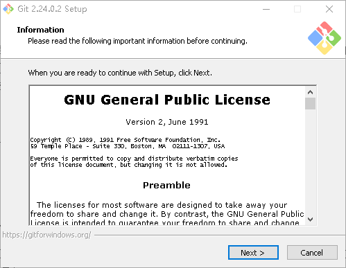
1.2.2 选择你要安装的位置，我以C盘为例，路径为图中所示，安装到其他位置的话，点击Browse，选择你要安装的位置，然后点击Next，进入下一步：
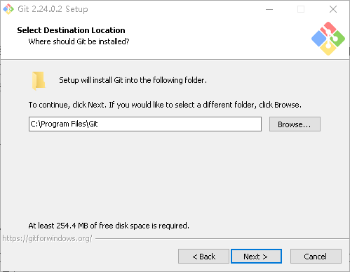
1.2.3 选择你是否创建桌面快捷放方式，其他默认即可，点击Next，进入下一步：
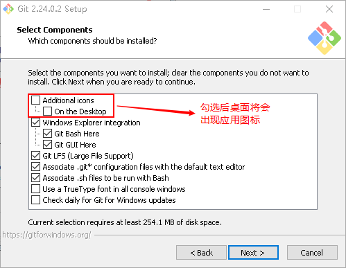
1.2.4 是否将Git快捷方式的目录加入开是菜单栏
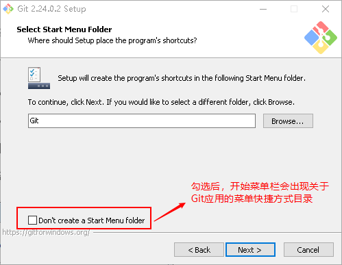
1.2.5 这个是选择文本编辑器的方式，默认是Vim，也可以选择其他的方式，自主选择，在这里我选择的Vim默认方式。选择好文本编辑器的方式后，点击Next，进入下一个流程：
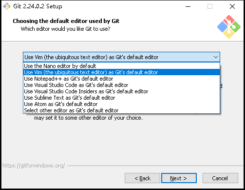
1.2.6 选择安装 Git 时对环境变量PATH的影响，第一种影响较小，第三种会影响到Windows的自带工具，默认勾选中间项，建议不要修改，直接点击 “Next” 继续安装：
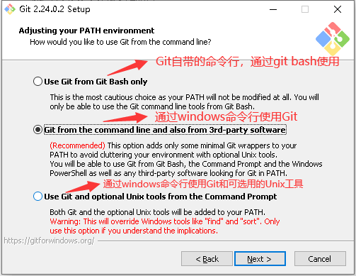
1.2.7 选择 Git 在使用 HTTPS 时使用的库，若无特殊需求，可保持默认选项，点击 “Next” 继续安装：
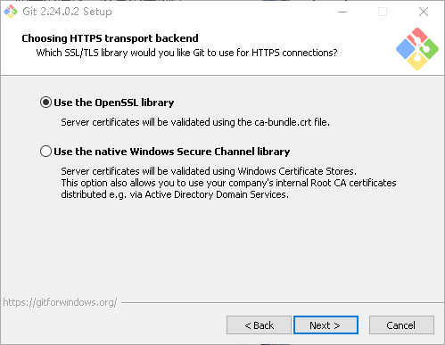
1.2.8 选择提交与拉取记录时，对换行符的处理方式，若无特殊需要，默认选择即可，点击 “Next” 继续安装：
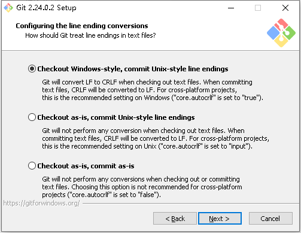
1.2.9 选择模拟终端软件（即命令行窗口软件），若无特殊需要，可默认选择，点击 “Next” 继续安装：
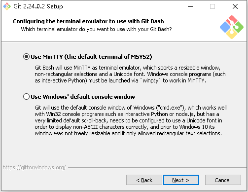
1.2.10 最新功能的询问，若不想尝试尚未保证稳定性的新功能，默认不勾选，点击 “Install” 即可完成安装：
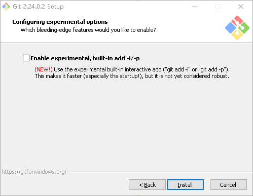
1.2.11 安装完成
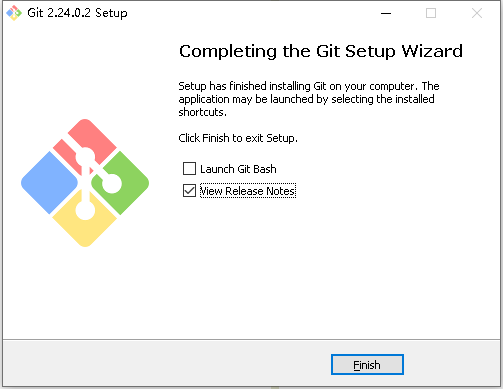
1.2.12 回到桌面，点击鼠标右键，会出现两个选项Git GUI Here和Git Bash Here，在打开Cmd(Win+R)，分别输入git和git –version，如果出现如下图的情况，即安装成功！
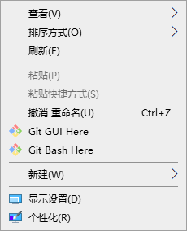
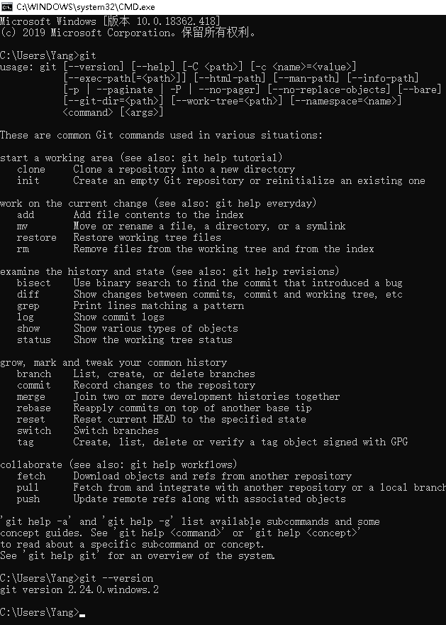
1.3 修改配置文件要用到的软件：
Visual Studio Code 官网下载
二、Github注册以及Github Pages创建
QQ 交流群(及文件下载):478404205
打开Github官网
点击右上角的Sign Up ，然后在出现的页面上填写你的相关信息，进行注册：
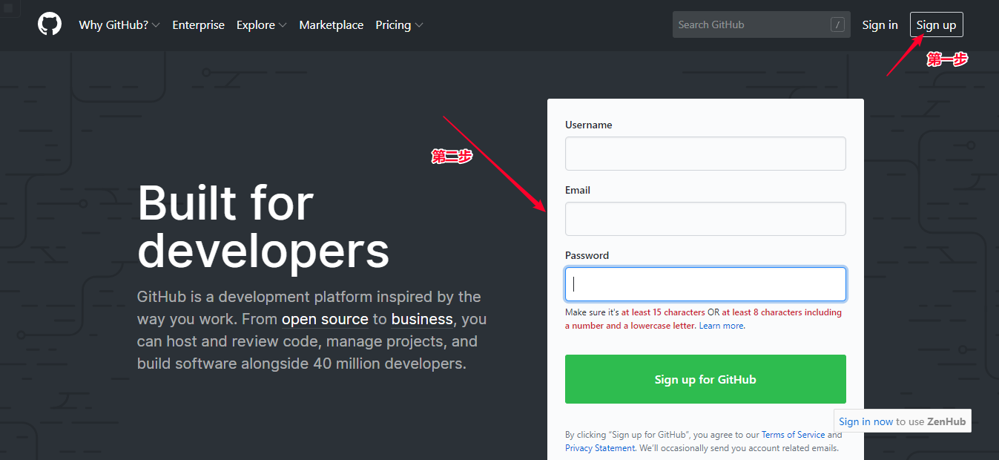
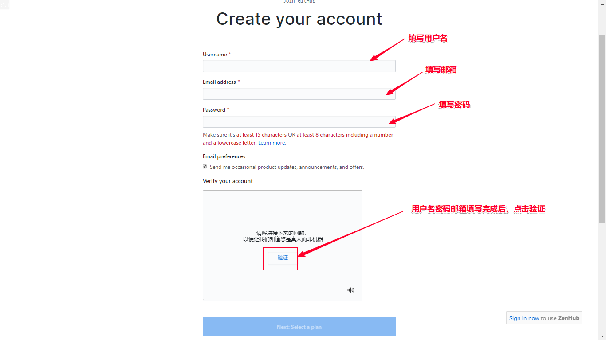
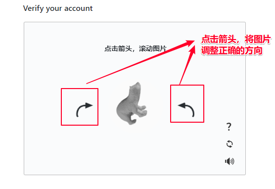
验证完成后，点击Next：Select a plan，会出现如上图的验证界面，同理，只需要将其中的动物调整为正向显示即可。接着会出现下图的界面，选择Free，下方的两个选项可选可不选，点击Continue继续：
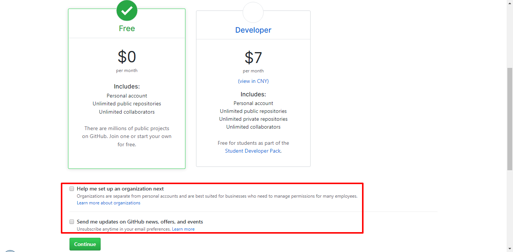
这时Github会给你发一封邮件，验证一下即可，验证过后才可以创建库。
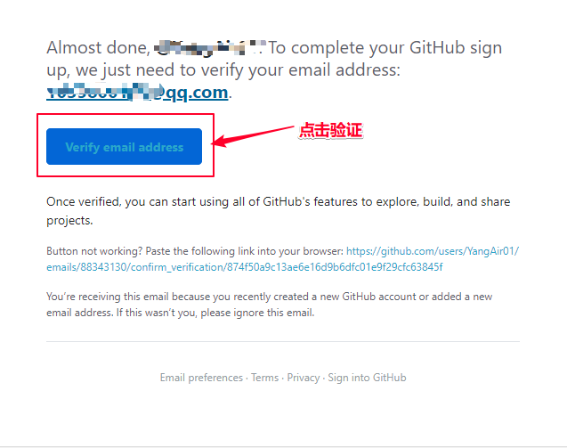
验证完成后，开始创建库，如下图所示，仓库名创建格式必须为：<用户名>.github.io，Description为描述仓库，自定义写，填写必要的描述，也可不填。勾选Initialize this repository with a README点击Creat repository进行创建。
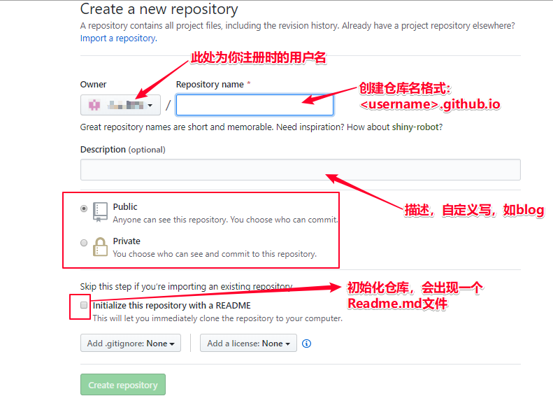
然后就会出现如图所示的界面，即仓库创建成功！
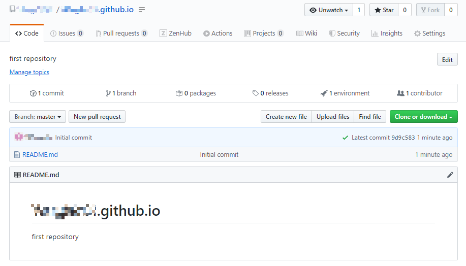
我们来测试一下，点击Create new file，出现如下界面，然后命名文件名为index.html，在填写如图的内容，再点击Commit new file，即创建成功，然后打开一个新的网页，输入网址https://<你的用户名>.github.io，即可以看见一个新的网页，其中的内容就是你写的内容。
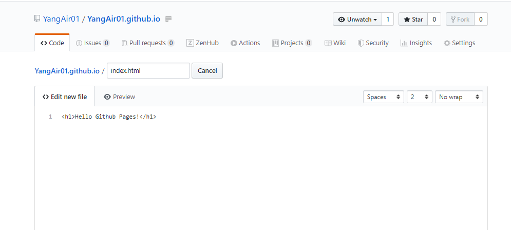
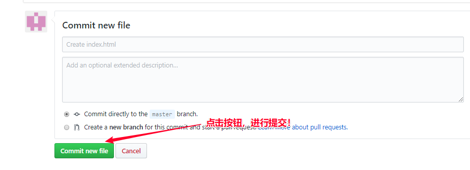
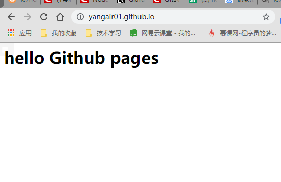
至此，Github的注册以及Github Pages已经创建完成了。
三、配置Git用户名和邮箱
QQ 交流群(及文件下载):478404205
在桌面点击鼠标右键，点击Git Bash Here，会出现一个界面如下图所示：
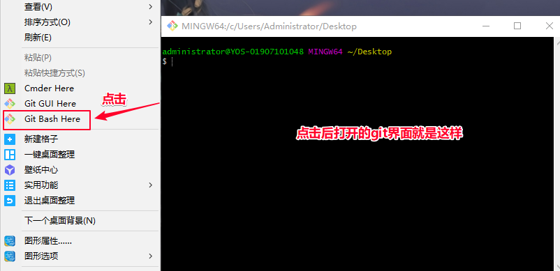
然后分别输入下面的两个命令，并回车：
git config --global user.name "此处填写你注册时的用户名"
git config --global user.email "此处填写你注册时的邮箱"
# 一般只要不报错，可以跳过下面寻找.gitconfig文件
然后找到.gitconfig文件，文件存放位置在C:/Users/[username]/.gitconfig（未找到的话，请开启显示隐藏文件的功能），用编辑器打开，看到如下图所示的内容，即配置成功！
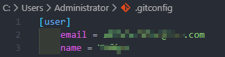
四、本地安装以及发布
QQ 交流群(及文件下载):478404205
1.安装到本地
首先选择一个磁盘作为你博客文件的存放位置，然后新建一个文件夹，比如名为blogtest的文件夹，创建完后，先不要点进去，在此处点击鼠标右键，选择Git Bash Here，然后依次输入如下命令，：
# hexo框架的安装
npm install -g hexo-cli
# 等上一个命令完成后，在输入下面的命令
hexo init <新建文件夹的名称> #初始化文件夹
cd <新建文件夹的名称>
npm install # 安装博客所需要的依赖文件
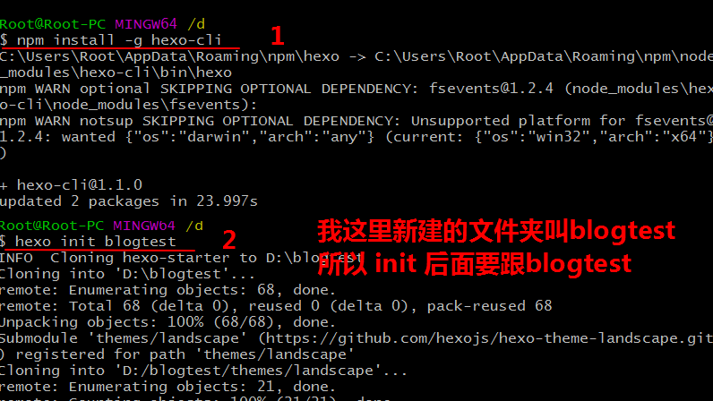
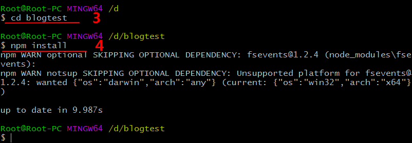
等待运行完成，此时文件夹中多了许多文件。
注意：后续的命令均需要在站点目录下（即文件夹内）使用Git Bash运行。
此时Hexo框架的本地搭建已经完成了。我们来运行一下看看，命令行依次输入以下命令 :
hexo g
hexo s
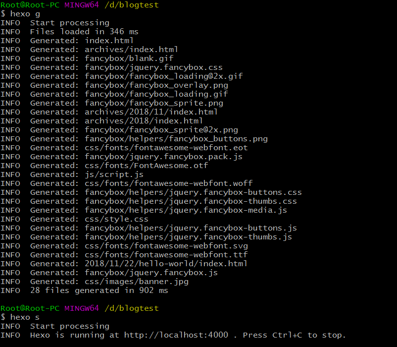
浏览器中打开http://localhost:4000/，可以看到一个网页，说明Hexo博客已经成功在本地运行。
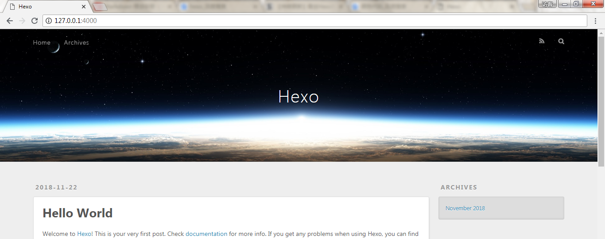
2. 本地博客发布到Github Pages
之前的步骤中，我们已经完成了对Github账户的注册以及Github Pages的创建，接下来是将本地博客发布至Github Pages。
2.1 首先需要安装发布的插件，在站点目录下执行下面的命令，也就是创建的博客目录下：
npm install hexo-deployer-git --save
紧接着，将本地目录与GitHub关联起来，输入下面的命令行：
ssh-keygen -t rsa -C "你的邮箱地址"
输入后一直回车，然后在C:/Users/[username]目录下找到名为.ssh的文件夹， 文件夹内会有两个文件，一个id_rsa.pub一个id_rsa，用文本编辑器打开id_rsa.pub，复制里面的的内容。 然后打开Github，点击右上角的头像 Settings 选择SSH and GPG keys
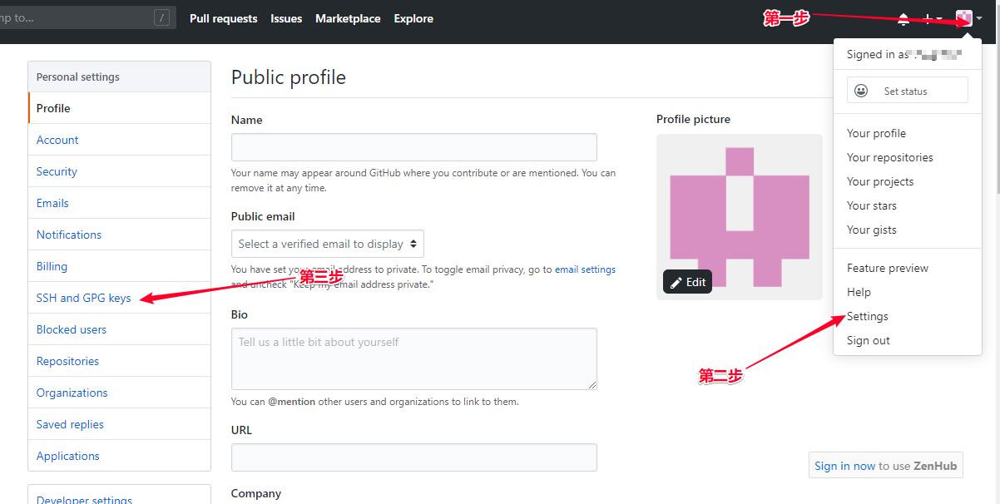
点击New SSH key 将之前复制的内容粘帖到Key的框中。 上面的Title可以随意，点击Add SSH key 完成添加。
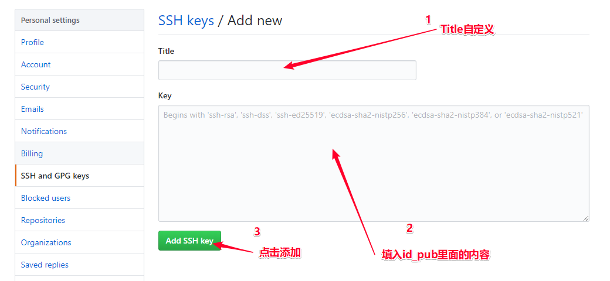
2.2 然后回到Git的命令行界面，测试一下是否与GitHub连接成功。输入下面的命令行：
ssh -T git@github.com
点击回车，然后会出现一个询问内容，输入yes，回车，会出现一段内容，Hi
2.3 进入博客站点目录，用文本编辑器打开_config.yml，这个_config.yml是博客的配置文件，在以后的博客修改，如个性化修改，博客SEO优化等都会使用到， 修改如下图的几个地方：
title: 你的博客名
subtitle: 博客的副标题，有些主题支持
description: 博客描述
keywords: 博客关键词
author: 作者，在文章中显示
language: 博客语言语种
timezone: 时区
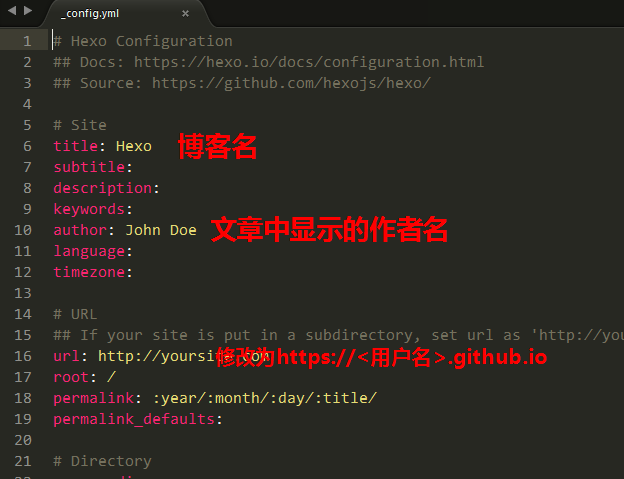
滑到文件最底部，有一个deploy，在deploy下面添加一个repo项 ，一个branch项。填入如下代码，并如下图所示：
type: git
repo: git@github.com:Github用户名/github用户名.github.io.git
//也可使用https地址，如：https://github.com/Github用户名/Github用户名.github.io.git
branch: master
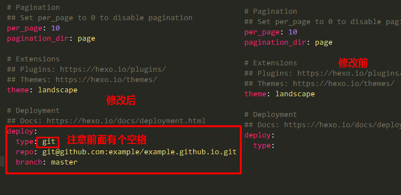
2.4 最后就是生成页面，并发布至Github Pages，执行如下命令：
# Hexo会根据配置文件渲染出一套静态页面
hexo g
# 将上一步渲染出的一系列文件上传至至Github Pages
hexo d
# 也可以直接输入此命令，直接完成渲染和上传
hexo g -d
上传完成后，在浏览器中打开https://<用户名>.github.io，查看上传的网页。如果页面变成了之前本地调试时的样子，说明上传以及完成了。没变的话查看一下上传时命令行窗口的信息有没有错误信息，没有的话清除一下浏览器缓存试试。
五、hexo博客主题安装与修改
QQ 交流群(及文件下载):478404205
1. 主题下载与安装
点击 网站 下载 master 分支的最新稳定版的代码，解压缩后，将 hexo-theme-matery 的文件夹复制到你 Hexo 的 themes 文件夹中即可。
当然你也可以在你的站点目录文件夹下使用 git clone 命令来下载：直接在站点根目录下执行下面的命令，即可进行主题的下载，主题有两个版本，稳定版本和最新版本(不定期更新优化)，自主选择版本。
git clone https://github.com/blinkfox/hexo-theme-matery themes/matery # 稳定版
git clone -b develop https://github.com/blinkfox/hexo-theme-matery themes/matery #最新版(不定期进行优化更新)
2. 主题配置
2.1 切换主题
注意：首先需要明白什么是站点配置文件，什么是主题配置文件，站点配置文件就是根目录下的配置文件，比如我的博客文件在F:\blog下，那么站点配置文件就是F:\blog_config.yml，主题配置文件就是F:\blog\themes\matery_config.yml。
另外注意，配置文件中的标点符号不要出现中文格式的标点符号，不然运行会出错。
主题下载完成后，将站点配置文件中的theme值修改为你下载主题的文件名，此处为matery，那么值就修改为theme: matery。
一些站点配置文件的其他地方的修改：
语言选择：如果为中文用户，则在language:后添加值zh-CN，如果不修改，默认为英语；
网址修改：url:的值为你的网址名，如http://xxxx.github.io，如果有域名，则修改为你的域名即可，至于有关域名的修改解析，后面我会说到，这里先不说了。
站点配置文件有个per_page属性，建议修改为6的倍数，这样网站在适应设备时，有较好的显示效果。
2.2 新建标签 tags 页面
tags 页是用来展示所有标签的页面，如果在你的博客 source 目录下还没有 tags/index.md 文件，那么你就需要新建一个，命令如下：
hexo new page "tags"
编辑你刚刚新建的页面文件 /source/tags/index.md，至少需要以下内容：
---
title: tags
date: 2018-09-30 18:23:38
type: "tags"
layout: "tags"
---
2.3 新建分类 categories 页面
categories 页是用来展示所有分类的页面，如果在你的博客 source 目录下还没有 categories/index.md 文件，那么你就需要新建一个，命令如下：
hexo new page "categories"
编辑你刚刚新建的页面文件 /source/categories/index.md，至少需要以下内容：
---
title: categories
date: 2018-09-30 17:25:30
type: "categories"
layout: "categories"
---
2.4 新建关于我 about 页面
about 页是用来展示关于我和我的博客信息的页面，如果在你的博客 source 目录下还没有 about/index.md 文件，那么你就需要新建一个，命令如下：
hexo new page "about"
编辑你刚刚新建的页面文件 /source/about/index.md，至少需要以下内容：
---
title: about
date: 2018-09-30 17:25:30
type: "about"
layout: "about"
---
2.5 新建留言板 contact 页面 (可选)
contact 页是用来展示留言板信息的页面，如果在你的博客 source 目录下还没有 contact/index.md 文件，那么你就需要新建一个，命令如下：
hexo new page "contact"
编辑你刚刚新建的页面文件 /source/contact/index.md，至少需要以下内容：
---
title: contact
date: 2018-09-30 17:25:30
type: "contact"
layout: "contact"
---
注：本留言板功能依赖于第三方评论系统，请激活你的评论系统才有效果。并且在主题的 _config.yml 文件中，第 19 至 21 行的“菜单”配置，取消关于留言板的注释即可。
2.6 新建友情链接 friends 页面 (可选)
friends 页是用来展示友情链接信息的页面，如果在你的博客 source 目录下还没有 friends/index.md 文件，那么你就需要新建一个，命令如下：
hexo new page "friends"
编辑你刚刚新建的页面文件 /source/friends/index.md，至少需要以下内容：
---
title: friends
date: 2018-12-12 21:25:30
type: "friends"
layout: "friends"
---
同时，在你的博客 source 目录下新建 _data 目录，在 _data 目录中新建 friends.json 文件，文件内容如下所示：
[{
"avatar": "http://image.luokangyuan.com/1_qq_27922023.jpg",
"name": "码酱",
"introduction": "我不是大佬，只是在追寻大佬的脚步",
"url": "http://luokangyuan.com/",
"title": "前去学习"
}, {
"avatar": "http://image.luokangyuan.com/4027734.jpeg",
"name": "闪烁之狐",
"introduction": "编程界大佬，技术牛，人还特别好，不懂的都可以请教大佬",
"url": "https://blinkfox.github.io/",
"title": "前去学习"
}, {
"avatar": "http://image.luokangyuan.com/avatar.jpg",
"name": "ja_rome",
"introduction": "平凡的脚步也可以走出伟大的行程",
"url": "https://me.csdn.net/jlh912008548",
"title": "前去学习"
}]
2.7 菜单导航配置
2.7.1 配置基本菜单导航的名称、路径url和图标icon.
1.菜单导航名称可以是中文也可以是英文(如：Index或主页)
2.图标icon 可以在Font Awesome 中查找
menu:
Index:
url: /
icon: fas fa-home
Tags:
url: /tags
icon: fas fa-tags
Categories:
url: /categories
icon: fas fa-bookmark
Archives:
url: /archives
icon: fas fa-archive
About:
url: /about
icon: fas fa-user-circle
Friends:
url: /friends
icon: fas fa-address-book
2.7.2. 二级菜单配置方法
如果你需要二级菜单则可以在原基本菜单导航的基础上如下操作
1.在需要添加二级菜单的一级菜单下添加children关键字(如:About菜单下添加children)
2.在children下创建二级菜单的 名称name,路径url和图标icon.
3.注意每个二级菜单模块前要加 -.
4.注意缩进格式
menu:
Index:
url: /
icon: fas fa-home
Tags:
url: /tags
icon: fas fa-tags
Categories:
url: /categories
icon: fas fa-bookmark
Archives:
url: /archives
icon: fas fa-archive
About:
url: /about
icon: fas fa-user-circle-o
Friends:
url: /friends
icon: fas fa-address-book
Medias:
icon: fas fa-list
children:
- name: Musics
url: /musics
icon: fas fa-music
- name: Movies
url: /movies
icon: fas fa-film
- name: Books
url: /books
icon: fas fa-book
- name: Galleries
url: /galleries
icon: fas fa-image
2.8 添加emoji表情支持（可选的）
本主题新增了对emoji表情的支持，使用到了 hexo-filter-github-emojis 的 Hexo 插件来支持 emoji表情的生成，把对应的markdown emoji语法（::,例如：:smile:）转变成会跳跃的emoji表情，安装命令如下：
npm install hexo-filter-github-emojis --save
在 Hexo 根目录下的 _config.yml 文件中，新增以下的配置项：
githubEmojis:
enable: true
className: github-emoji
inject: true
styles:
customEmojis:
执行 hexo clean && hexo g 重新生成博客文件，然后就可以在文章中对应位置看到你用emoji语法写的表情了。
2.9 代码高亮
由于 Hexo 自带的代码高亮主题显示不好看，所以主题中使用到了 hexo-prism-plugin 的 Hexo 插件来做代码高亮，安装命令如下：
npm i -S hexo-prism-plugin
然后，修改 Hexo 根目录下 _config.yml 文件中 highlight.enable 的值为 false，并新增 prism 插件相关的配置，主要配置如下：
prism_plugin:
mode: 'preprocess' # realtime/preprocess
theme: 'tomorrow'
line_number: false # default false
custom_css:
2.10 搜索
本主题中还使用到了 hexo-generator-search 的 Hexo 插件来做内容搜索，安装命令如下：
npm install hexo-generator-search --save
在 Hexo 根目录下的 _config.yml 文件中，新增以下的配置项：
search:
path: search.xml
field: post
2.11 中文链接转拼音（可选的）
如果你的文章名称是中文的，那么 Hexo 默认生成的永久链接也会有中文，这样不利于 SEO，且 gitment 评论对中文链接也不支持。我们可以用 hexo-permalink-pinyin Hexo 插件使在生成文章时生成中文拼音的永久链接。
安装命令如下：
npm i hexo-permalink-pinyin --save
在 Hexo 根目录下的 _config.yml 文件中，新增以下的配置项：
permalink_pinyin:
enable: true
separator: '-' # default: '-'
注：除了此插件外，hexo-abbrlink 插件也可以生成非中文的链接。
2.12 文章字数统计插件（可选的）
如果你想要在文章中显示文章字数、阅读时长信息，可以安装 hexo-wordcount插件。
安装命令如下：
npm i --save hexo-wordcount
然后只需在本主题下的 _config.yml 文件中，激活以下配置项即可：
wordCount:
enable: false # 将这个值设置为 true 即可.
postWordCount: true
min2read: true
totalCount: true
2.13 添加 RSS 订阅支持（可选的）
本主题中还使用到了 hexo-generator-feed 的 Hexo 插件来做 RSS，安装命令如下：
npm install hexo-generator-feed --save
在 Hexo 根目录下的 _config.yml 文件中，新增以下的配置项：
feed:
type: atom
path: atom.xml
limit: 20
hub:
content:
content_limit: 140
content_limit_delim: ' '
order_by: -date
执行 hexo clean && hexo g 重新生成博客文件，然后在 public 文件夹中即可看到 atom.xml 文件，说明你已经安装成功了。
2.14 添加 DaoVoice 在线聊天功能（可选的）
前往 DaoVoice官网注册并且获取 app_id，并将 app_id 填入主题的 _config.yml 文件中
2.15 添加 Tidio 在线聊天功能（可选的）
前往 Tidio官网注册并且获取 Public Key，并将 Public Key 填入主题的 _config.yml 文件中。
2.16 修改页脚
页脚信息可能需要做定制化修改，而且它不便于做成配置信息，所以可能需要你自己去再修改和加工。修改的地方在主题文件的 /layout/_partial/footer.ejs 文件中，包括站点、使用的主题、访问量等。
2.17 修改社交链接
在主题的 _config.yml 文件中，默认支持 QQ、GitHub 和邮箱等的配置，你可以在主题文件的 /layout/_partial/social-link.ejs 文件中，新增、修改你需要的社交链接地址，增加链接可参考如下代码：
<% if (theme.socialLink.github) { %>
<a href="<%= theme.socialLink.github %>" class="tooltipped" target="_blank" data-tooltip="访问我的GitHub" data-position="top" data-delay="50">
<i class="fab fa-github"></i>
</a>
<% } %>
其中，社交图标（如：fa-github）你可以在 Font Awesome 中搜索找到。以下是常用社交图标的标识，供你参考：
Facebook: fab fa-facebook
Twitter: fab fa-twitter
Google-plus: fab fa-google-plus
Linkedin: fab fa-linkedin
Tumblr: fab fa-tumblr
Medium: fab fa-medium
Slack: fab fa-slack
Sina Weibo: fab fa-weibo
Wechat: fab fa-weixin
QQ: fab fa-qq
Zhihu: fab fa-zhihu
注意: 本主题中使用的 Font Awesome 版本为 5.11.0。
2.18 修改打赏的二维码图片
在主题文件的 source/medias/reward 文件中，你可以替换成你的的微信和支付宝的打赏二维码图片。
2.19 配置音乐播放器（可选的）
要支持音乐播放，就必须开启音乐的播放配置和音乐数据的文件。
首先，在你的博客 source 目录下的 _data 目录（没有的话就新建一个）中新建 musics.json 文件，文件内容如下所示：
[{
"name": "五月雨变奏电音",
"artist": "AnimeVibe",
"url": "http://xxx.com/music1.mp3",
"cover": "http://xxx.com/music-cover1.png"
}, {
"name": "Take me hand",
"artist": "DAISHI DANCE,Cecile Corbel",
"url": "/medias/music/music2.mp3",
"cover": "/medias/music/cover2.png"
}, {
"name": "Shape of You",
"artist": "J.Fla",
"url": "http://xxx.com/music3.mp3",
"cover": "http://xxx.com/music-cover3.png"
}]
注：以上 JSON 中的属性：name、artist、url、cover 分别表示音乐的名称、作者、音乐文件地址、音乐封面。
然后，在主题的 _config.yml 配置文件中激活配置即可：
# 是否在首页显示音乐.
music:
enable: true
showTitle: false
title: 听听音乐
fixed: false # 是否开启吸底模式
autoplay: false # 是否自动播放
theme: '#42b983'
loop: 'all' # 音频循环播放, 可选值: 'all', 'one', 'none'
order: 'list' # 音频循环顺序, 可选值: 'list', 'random'
preload: 'auto' # 预加载，可选值: 'none', 'metadata', 'auto'
volume: 0.7 # 默认音量，请注意播放器会记忆用户设置，用户手动设置音量后默认音量即失效
listFolded: false # 列表默认折叠
listMaxHeight: # 列表最大高度
3. 文章 Front-matter 介绍
Front-matter 选项详解
Front-matter 选项中的所有内容均为非必填的。但我仍然建议至少填写 title 和 date 的值。
您可以在文章md文件的 front-matter 中指定 reprintPolicy 来给单个文章配置转载规则
以下为文章的 Front-matter 示例。
最简示例
---
title: typora-vue-theme主题介绍
date: 2018-09-07 09:25:00
---
最全示例
---
title: typora-vue-theme主题介绍
date: 2022-05-02 09:25:00
author: CrazyYu
img: /source/images/xxx.jpg
top: true
cover: true
coverImg: /images/1.jpg
password: 8d969eef6ecad3c29a3a629280e686cf0c3f5d5a86aff3ca12020c923adc6c92
toc: false
mathjax: false
summary: 这是你自定义的文章摘要内容，如果这个属性有值，文章卡片摘要就显示这段文字，否则程序会自动截取文章的部分内容作为摘要
categories: Markdown
tags:
- Typora
- Markdown
---
4. 效果截图
最新版本进行了优化更新，效果图与最初的效果图有差别，下面的图不是最新版本的。
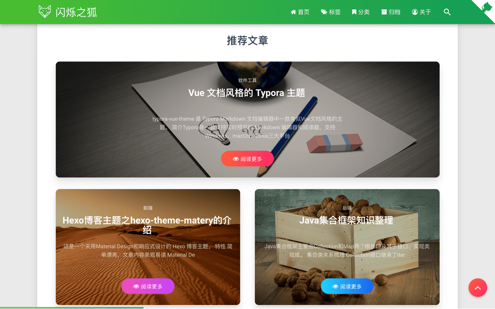
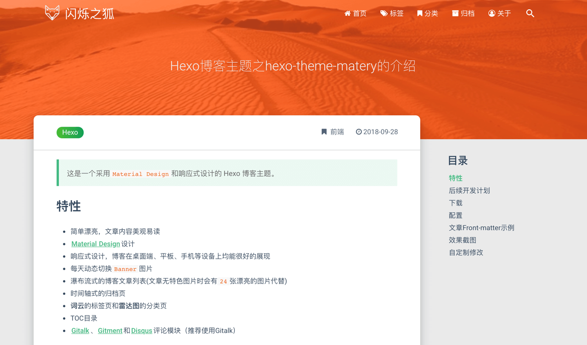
5. 自定制修改
我认为个人博客应该都有自己的风格和特色。如果本主题中的诸多功能和主题色彩你不满意，可以在主题中自定义修改，很多更自由的功能和细节点的修改难以在主题的 _config.yml 中完成，需要修改源代码才来完成。以下列出了可能对你有用的地方：
5.1 修改主题颜色
在主题文件的 /source/css/matery.css 文件中，搜索 .bg-color 来修改背景颜色：
/* 整体背景颜色，包括导航、移动端的导航、页尾、标签页等的背景颜色. */
.bg-color {
background-image: linear-gradient(to right, #4cbf30 0%, #0f9d58 100%);
}
/*如果想去掉banner图的颜色渐变效果，请将以下的css属性注释掉或者删除掉即可*/
@-webkit-keyframes rainbow {
/* 动态切换背景颜色. */
}
@keyframes rainbow {
/* 动态切换背景颜色. */
}
5.2 修改 banner 图和文章特色图
你可以直接在 /source/medias/banner 文件夹中更换你喜欢的 banner 图片，主题代码中是每天动态切换一张，只需 7 张即可。如果你会 JavaScript 代码，可以修改成你自己喜欢切换逻辑，如：随机切换等，banner 切换的代码位置在 /layout/_partial/bg-cover-content.ejs 文件的 代码中：
$('.bg-cover').css('background-image', 'url(/medias/banner/' + new Date().getDay() + '.jpg)');
在 /source/medias/featureimages 文件夹中默认有 24 张特色图片，你可以再增加或者减少，并需要在 _config.yml 做同步修改。
如果想改为每小时或者每分钟切换banner图的话，需要将getDay()改为getHours()或者getMinutes()即可。
5.3 修改网站相关信息
首先看一个图，如下：
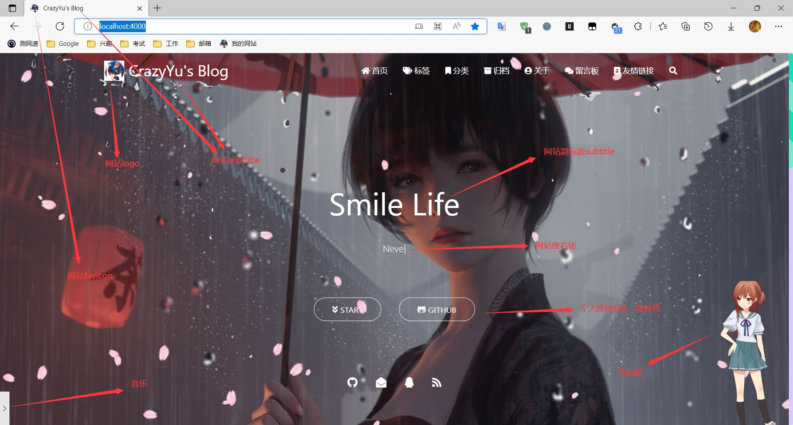
紧接着放上相关的配置文件信息：
1.网站信息的修改
# 这是根目录下的配置文件信息
title: CrazyYu's Blog #这是网站标题
subtitle: 'Smile Life' #这是网站副标题subtitler
# 下面两个description,keywords，需要填上，如果想让搜索引擎收录，这个做SEO优化必不可忽视的两个属性
description: '个人博客' #网站描述
keywords: [HTML, CSS, JavaScript, JQuery, React, Vue.js等] #网站的关键词
author: Zhaoxuanjing #作者，文章版权所显示的
language: zh-cn #网站语言，不填写，默认为英文
timezone: '' #时区，可以不填写
# 这是主题配置文件的相关信息
# 配置网站favicon和网站LOGO
# 可以用的CDN，也可以使用本地文件
favicon: /favicon.png
logo: /medias/logo.png
# 网站副标题，打字效果
# 如果有符号 ‘ ，请在 ’ 前面加上 \
subtitle:
enable: true
loop: true # 是否循环
showCursor: true # 是否显示光标
startDelay: 300 # 开始延迟
typeSpeed: 100 # 打字速度
backSpeed: 50 # 删除速度
sub1: 从来没有真正的绝境, 只有心灵的迷途
sub2: Never really desperate, only the lost of the soul
注意：
网站打字效果副标题默认有两个，即sub1和sub2，如果想写多个，则需要修改两处地方，首先修改配置文件，如上面所示，在sub1和sub2后面继续添加即可，然后在去主题目录下的layout文件夹下的_partial文件夹，修改bg-cover-content.ejs文件，大约在12行左右，如下面所示：
<div class="description center-align">
<% if (theme.subtitle.enable) { %>
<span id="subtitle"></span>
<script src="https://cdn.jsdelivr.net/npm/typed.js@2.0.11"></script>
<script>
var typed = new Typed("#subtitle", {
strings: ['<%= theme.subtitle.sub1 %>',
'<%= theme.subtitle.sub2 %>',
'<%= theme.subtitle.sub3 %>',
'<%= theme.subtitle.sub4 %>',
'<%= theme.subtitle.sub5 %>',
'<%= theme.subtitle.sub6 %>'],
startDelay: <%= theme.subtitle.startDelay %>,
typeSpeed: <%= theme.subtitle.typeSpeed %>,
loop: <%= theme.subtitle.loop %>,
backSpeed: <%= theme.subtitle.backSpeed %>,
showCursor: <%= theme.subtitle.showCursor %>
});
</script>
<% } else { %>
<%= config.description %>
<% } %>
</div>
2.社交链接的修改
默认的配置信息为：
# 首页 banner 中的第二行个人信息配置，留空即不启用
socialLink:
github: https://github.com/CrazyYuchi
email: 2794086070@qq.com
facebook: # https://www.facebook.com/profile.php?id=100080256978101
twitter: # https://twitter.com/
qq: 2794086070
weibo: # https://weibo.com//u/5629150839
zhihu: # https://www.zhihu.com/
rss: true # true、false
如果想添加简书，CSDN，掘金，博客园等等，需要在主题配置文件添加相关配置，可以进行如下配置(例如)：
socialLink:
qq: 2794086070
weixin: ***.png
github: https://github.com/CrazyYuchi
email: mailto:2794086070@qq.com
facebook: # https://www.facebook.com/xxx
twitter: # https://twitter.com/xxx
weibo: # https://weibo.com/xxx
zhihu: https://www.zhihu.com/people/xuan-tian-40-64/activities
juejin: https://juejin.im/user/5a902053f265da4e7527ae71/activities
csdn: https://blog.csdn.net/victoryxa
jianshu: https://www.jianshu.com/u/3b3856869772
cnblogs: https://www.cnblogs.com/yafine/
rss: true # true、false
其中的weixin我是用的图片链接，会跳转到一个新的标签页，之后还需要修改ejs文件，文件在主题目录下的layout文件夹下的_partial文件夹，修改social-link.ejs，添加相关的配置，个人添加的配置如下(例如)：
<% if (theme.socialLink.jianshu) { %>
<a href="<%= theme.socialLink.jianshu %>" class="tooltipped" target="_blank" data-tooltip="关注我的简书: <%= theme.socialLink.jianshu %>" data-position="top" data-delay="50">
<i class="fab fa-jianshu">简</i>
</a>
<% } %>
<% if (theme.socialLink.csdn) { %>
<a href="<%= theme.socialLink.csdn %>" class="tooltipped" target="_blank" data-tooltip="关注我的CSDN: <%= theme.socialLink.csdn %>" data-position="top" data-delay="50">
<i class="fab fa-csdn">C</i>
</a>
<% } %>
<% if (theme.socialLink.juejin) { %>
<a href="<%= theme.socialLink.juejin %>" class="tooltipped" target="_blank" data-tooltip="关注我的掘金: <%= theme.socialLink.juejin %>" data-position="top" data-delay="50">
<i class="fab fa-juejin">掘</i>
</a>
<% } %>
<% if (theme.socialLink.cnblogs) { %>
<a href="<%= theme.socialLink.cnblogs %>" class="tooltipped" target="_blank" data-tooltip="关注我的博客园: <%= theme.socialLink.cnblogs %>" data-position="top" data-delay="50">
<i class="fab fa-juejin">博</i>
</a>
<% } %>
<% if (theme.socialLink.weixin) { %>
<a href="<%= theme.socialLink.weixin %>" class="tooltipped" target="_blank" data-tooltip="微信联系我: <%= theme.socialLink.weixin %>" data-position="top" data-delay="50">
<i class="fab fa-weixin"></i>
</a>
<% } %>
六、hexo博客美化（DIY）
QQ 交流群(及文件下载):478404205
主题DIY会涉及到js文件和css文件等的修改，个人建议新增的js文件放在themes/matery/layout/layout.ejs这个文件下，这样会稍微加快博客访问的速度。不想花钱最好的方式是使用cdn.jsdeliver。以后会说到。
1. 动态标题
先放上效果图再说：
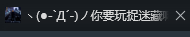 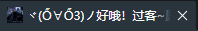
实现方法，直接在themes/matery/layout/layout.ejs文件中添加如下代码：
<script type="text/javascript">
var OriginTitile=document.title,st;
document.addEventListener("visibilitychange",function(){
document.hidden?(document.title="ヽ(●-`Д´-)ノ你要玩捉迷藏嘛",clearTimeout(st)):(document.title="(Ő∀Ő3)ノ好哦！",st=setTimeout(function(){document.title=OriginTitile},3e3))
})
</script>
2. 修改导航栏颜色以及透明效果
打开themes/matery/source/css/matery.css文件，大约在250行，有一个.bg-color属性，修改其属性值即可，代码如下：
.bg-color {
background-image: linear-gradient(to right, #4cbf30 0%, #0f9d58 100%); //修改成自己喜欢的颜色值
opacity: 0.8; //透明效果 值范围 0~1，看情况自己修改
}
3. 添加动态诗词
采用的是今日诗词，每次返回一句诗词，根据时间、地点、天气、事件智能推荐。官网有API文档，可以去看一下，有多种安装方式，最简单的方式就是从官网获取代码，在/themes/matery/layout/_partial/head.ejs添加下面的一行代码：
<script src="https://sdk.jinrishici.com/v2/browser/jinrishici.js" charset="utf-8"></script>
然后再将/themes/matery/layout/_partial/bg-cover-content.ejs中的<%= config.description %>修改为把<%= config.description %>改为<%- ‘正在加载今日诗词….‘ %>，这个使用前提是将主题配置文件的subtitle的值改为false。
4. 鼠标点击文字特效
实现方法，引入js文件，在主题文件下的/source/js/下新建click_show_text.js，其代码如下：
var a_idx = 0;
jQuery(document).ready(function ($) {
$("body").click(function (e) {
var a = new Array("富强", "民主", "文明", "和谐", "自由", "平等", "公正", "法治", "爱国", "敬业", "诚信", "友善");
var $i = $("<span/>").text(a[a_idx]);
a_idx = (a_idx + 1) % a.length;
var x = e.pageX,
y = e.pageY;
$i.css({
"z-index": 5,
"top": y - 20,
"left": x,
"position": "absolute",
"font-weight": "bold",
"color": "#FF0000"
});
$("body").append($i);
$i.animate({
"top": y - 180,
"opacity": 0
},
3000,
function () {
$i.remove();
});
});
setTimeout('delay()', 2000);
});
function delay() {
$(".buryit").removeAttr("onclick");
}
5. 修改原有相册
参考教程：后面专门出一期
6. 添加天气小插件
首先去中国天气官网，配置自己的插件，选择自定义插件—>自定义样式——>生成代码，然后会生成一段代码，复制粘贴到 themes/matery/layout/layout.ejs即可。
7. 关于我页面添加个人简历
打开theme/matery/layout/about.ejs文件，大约在13行。有一个div class=”card”标签，找出其对应结尾的标签，大约在61行左右，然后在新增如下代码：
<div class="card">
<div class="card-content">
<div class="card-content article-card-content">
<div class="title center-align" data-aos="zoom-in-up">
<i class="fa fa-address-book"></i> <%- __('个人简历') %>
</div>
<div id="articleContent" data-aos="fade-up">
<%- page.content %>
</div>
</div>
</div>
</div>
注意粘贴的位置和空格要正确，这里的位置随你自己设置，你也可以把简历作为第一个card，然后/source/about/index.md下面写上你的简历了（就像写博客一样）。
8. 豆瓣书单电影页面
1.首先在博客站点目录执行下面的命令安装豆瓣插件：
npm install hexo-douban --save
2.紧接着在博客站点目录的配置文件_config.yml下，添加如下配置：
douban:
user: 252345665 #这个需要修改为你个人的id
builtin: false #如果想生成豆瓣页面，这个需要设置为true
book:
title: 'This is my book title'
quote: 'This is my book quote'
movie:
title: 'This is my movie title'
quote: 'This is my movie quote'
game:
title: 'This is my game title'
quote: 'This is my game quote'
timeout: 10000
**user:**你的豆瓣ID。打开豆瓣，登入账户，然后在右上角点击 ”个人主页“，这时候地址栏的URL大概是这样：https://www.douban.com/people/xxxxxx/ ，其中的”xxxxxx”就是你的个人ID了。
builtin：是否将生成页面的功能嵌入 hexo s 和 hexo g 中，默认是 false ，另一可选项为 true 。
title： 该页面的标题。
quote： 写在页面开头的一段话,支持html语法。
timeout： 爬取数据的超时时间，默认是 10000ms，如果在使用时发现报了超时的错(ETIMEOUT)可以把这个数据设置的大一点。
如果只想显示某一个页面(比如movie)，那就把其他的配置项注释掉即可。
3.然后再主题配置文件_config.yml中添加关于此页面的菜单：(例如)
menu:
媒体:
url: /
icon: fas fa-list
children:
- name: 电影
url: /movies
icon: fas fa-film
- name: 书单
url: /books
icon: fas fa-book
- name: 游戏
url: /games
icon: fas fa-gamepad
4.适配Matery主题：在 /themes/hexo-theme-matery/layout 文件夹下面创建一个名为 douban.ejs 的文件，并将下面的内容复制进去：
<%- partial('_partial/post-cover') %>
<style>
.hexo-douban-picture img {
width: 100%;
}
</style>
<main class="content">
<div id="contact" class="container chip-container">
<div class="card">
<div class="card-content" style="padding: 30px">
<h1 style="margin: 10px 0 10px 0px;"><%= page.title %></h1>
<%- page.content %>
</div>
</div>
<div class="card">
<div class="card-content" style="text-align: center">
<h3 style="margin: 5px 0 5px 5px;">如果你有好的内容推荐，欢迎在下面留言！</h3>
</div>
</div>
<div class="card">
<% if (theme.gitalk && theme.gitalk.enable) { %>
<%- partial('_partial/gitalk') %>
<% } %>
<% if (theme.gitment.enable) { %>
<%- partial('_partial/gitment') %>
<% } %>
<% if (theme.disqus.enable) { %>
<%- partial('_partial/disqus') %>
<% } %>
<% if (theme.livere && theme.livere.enable) { %>
<%- partial('_partial/livere') %>
<% } %>
<% if (theme.valine && theme.valine.enable) { %>
<%- partial('_partial/valine') %>
<% } %>
</div>
</div>
</main>
5.然后在博客站点目录下的node_modules文件夹下找到hexo-douban/lib，文件夹下有三个js文件，分别为：books-generator.js 、games-generator.js 、movies-generator.js，用文本编辑器打开这三个文件，并将其文件内容末尾的代码修改为一下内容：
/* 原文件内容为 layout: [`page`, `post`] ，将其修改为下面的内容*/
layout: [`page`, `douban`]
6.最后就是使用并生成相应的页面，执行命令如下:
hexo douban
需要注意的是，通常大家都喜欢用 hexo d 来作为 hexo deploy 命令的简化，但是当安装了 hexo douban 之后，就不能用 hexo d 了，因为 hexo douban 跟 hexo deploy 的前缀都是 hexo d ，你以后执行的 hexo d 将不再是 Hexo 页面的生成，而是豆瓣页面的生成。
以下是可选的命令参数：
-h, --help # 帮助页面
-b, --books # 只生成书单页面
-g, --games # 只生成游戏页面
-m, --movies # 只生成电影页面
当站点配置文件的builtin的值为true时，生成页面的功能会嵌入到hexo g和hexo s中，在进行部署生成操作，会自动生成相应的页面。
9. 外链跳转插件
hexo-external-link是一个跳转外链相关插件。自动为所有html文件中外链的a标签生成对应的属性。 比如 设置target=’_blank’, rel=’external nofollow noopener noreferrer’ 告诉搜索引擎这是外部链接,不要将该链接计入权重。 同时自动生成外链跳转页面,默认在根目录下 go.html;
使用 npm 或者 yarn 安装
## npm 安装
npm install hexo-external-link --save
## yarn 安装
yarn add hexo-external-link
之后再hexo博客站点根目录下添加如下配置：
hexo_external_link:
enable: true
enable_base64_encode: true
url_param_name: 'u'
html_file_name: 'go.html'
target_blank: true
link_rel: 'external nofollow noopener noreferrer'
domain: 'your_domain' # 如果开启了防盗链
safety_chain: true
enable - 是否开启hexo_external_link插件 - 默认 false
enable_base64_encode - 是否对跳转url使用base64编码 - 默认 fasle
url_param_name - url参数名,在跳转到外链传递给html_file_name的参数名 - 默认 ‘u’
html_file_name - 跳转到外链的页面文件路径 - 默认 ‘go.html’
target_blank - 是否为外链的a标签添加target='_blank' - 默认 true
link_rel - 设置外链的a标签的rel属性 - 默认 ‘external nofollow noopener noreferrer’
domain - 如果开启了防盗链,除了 localhost 和 domain 之外调用会跳到主页,同时也是判断链接是否为外链的依据 - 默认 window.location.host
safety_chain - go.html 为了防止外链盗用 对域名进行的判断 - 默认 false
10. 添加动态科技线条背景
在themes/matery/layout/layout.ejs文件中添加如下代码：
<!--动态线条背景-->
<script type="text/javascript"
color="122 103 238" opacity='0.7' zIndex="-2" count="200" src="//cdn.bootcss.com/canvas-nest.js/1.0.0/canvas-nest.min.js">
</script>
其中：
color：表示线条颜色，三个数字分别为(R,G,B)，默认：（0,0,0）
opacity：表示线条透明度（0~1），默认：0.5
count：表示线条的总数量，默认：150
zIndex：表示背景的z-index属性，css属性用于控制所在层的位置，默认：-1
11. 添加鼠标点击烟花爆炸效果
首先在themes/matery/source/js目录下新建fireworks.js文件，打开这个网址连接，将内容复制粘贴到fireworks.js即可。
然后再themes/matery/layout/layout.ejs文件内添加下面的内容：
<canvas class="fireworks" style="position: fixed;left: 0;top: 0;z-index: 1; pointer-events: none;" ></canvas>
<script type="text/javascript" src="//cdn.bootcss.com/animejs/2.2.0/anime.min.js"></script>
<script type="text/javascript" src="/js/fireworks.js"></script>
然后hexo clean && hexo g && hexo s即可，就可以看到效果了。
12. 添加樱花飘落效果
先看效果：我用的就是樱花
在themes/matery/source/js目录下新建sakura.js文件，打开这个网址连接，将内容复制粘贴到sakura.js即可。
然后再themes/matery/layout/layout.ejs文件内添加下面的内容：
<script type="text/javascript">
//只在桌面版网页启用特效
var windowWidth = $(window).width();
if (windowWidth > 768) {
document.write('<script type="text/javascript" src="/js/sakura.js"><\/script>');
}
</script>
13. 添加鼠标彩虹星星掉落跟随效果
在themes/matery/source/js目录下新建cursor.js文件，打开这个网址，将内容复制粘贴到cursor.js即可。
然后再themes/matery/layout/layout.ejs文件内添加下面的内容：
<script src="/js/cursor.js"></script>
14. 添加雪花飘落效果
跟樱花类似
在themes/matery/source/js目录下新建snow.js文件，打开这个网址，将内容复制粘贴到cursor.js即可。
然后再themes/matery/layout/layout.ejs文件内添加下面的内容：
<script src="/js/snow.js"></script>
15. 添加自定义页面
首先看一下效果
首先在站点目录下的source文件夹下新建aboutme文件，文件名可自定义，然后编写一个index.html放入aboutme文件夹下，然后在主题配置文件下的导航配置信息添加下面的配置：
About:
url: /
icon: fas fa-address-card
children:
- name: 关于我
url: /about
icon: fas fa-user-circle
- name: Another #这是新添加的，在原有配置基础上添加
url: /aboutme
icon: fa fa-user-secret
然后在站点配置文件下，找到skip_render，在后面添加属性，如下：
skip_render: aboutme/** # 其意思为在对文件进行渲染时跳过aboutme文件下的所有文件
知道方法后，你可以添加你自己想要添加的页面，让你的博客内容更加充实。
16. 添加404页面
我的404页面是这样的：
开始说一下配置步骤，首先再站点根目录下的source文件夹下新建404.md文件，里面内容如下：
---
title: 404
date: 2022-5-2 16:41:10
type: "404"
layout: "404"
description: "Oops～，我崩溃了！找不到你想要的页面了"
---
紧接着再新建主题文件夹的layout目录下新建404.ejs文件，添加内容如下：
<style type="text/css">
/* don't remove. */
.about-cover {
height: 90.2vh;
}
</style>
<div class="bg-cover pd-header about-cover">
<div class="container">
<div class="row">
<div class="col s10 offset-s1 m8 offset-m2 l8 offset-l2">
<div class="brand">
<div class="title center-align">
404
</div>
<div class="description center-align">
<%= page.description %>
</div>
</div>
</div>
</div>
</div>
</div>
<script>
// 每天切换 banner 图. Switch banner image every day.
$('.bg-cover').css('background-image', 'url(https://cdn.jsdelivr.net/gh/Yafine/cdn@2.6/source/medias/banner/' + new Date().getDay() + '.jpg)');
</script>
然后部署，再看看效果即可。
17. 文章生成永久链接
主题默认的文章链接配置是
premalink: :year/:month/:day/:title
这种生成的链接地址很长，文章版权的链接地址会出现一大串字符编码，一点也不好看。因此需要修改文章生成链接的格式。
首先再根目录下执行下面的命令：
npm install hexo-abbrlink --save
然后再站点配置文件下添加如下配置：
abbrlink:
alg: crc16 #算法： crc16(default) and crc32
rep: hex #进制： dec(default) and hex: dec #输出进制：十进制和十六进制，默认为10进制。丨dec为十进制，hex为十六进制
再将站点配置文件的permalink的值修改为：
permalink: posts/:abbrlink.html # 此处可以自己设置，也可以直接使用 :/abbrlink
生成文章的链接格式就会是如下样例（官方样例）:
crc16 & hex
https://post.zz173.com/posts/66c8.html
crc16 & dec
https://post.zz173.com/posts/65535.html
crc32 & hex
https://post.zz173.com/posts/8ddf18fb.html
crc32 & dec
https://post.zz173.com/posts/1690090958.html
生成完后，原md文件的Front-matter 内会增加abbrlink 字段，值为生成的ID 。这个字段确保了在我们修改了Front-matter 内的博客标题title或创建日期date字段之后而不会改变链接地址。
七、添加评论系统
我只说我用的评论系统的配置方法，其他的就不说了。
添加来必力评论系统
首先去来必力官网，点击导航栏上的安装，会出现如下图的页面：
City 版：是一款适合所有人使用的免费版本；
Premium 版：是一款能够帮助企业实现自动化管理的多功能收费版本。
注册完之后，会提示你填写网站的相关信息，如网站链接，网站名称等等，填写完毕之后，会给你一段代码，如下图所示：
# Livere comment configuration, the default is not activated
# Livere 来必力评论模块的配置，默认为不激活
livere:
enable: true # true即为开启评论系统
uid: #这里填写你的uid
然后在执行相关的部署命令，然后查看效果即可。
八、成功了
我相信经过大家的不懈努力，大家的博客应该搭建的很好了，虽然用了很多时间，但搭建完成后的成就感是真的巴适。
正如我现在写完了这篇博文，断断续续花了我十多天，一点点敲打出来是真的很辛苦，但完成了的感觉像是在起飞，哈哈。
如果这篇教程对你有些许的帮助，也就是我编写的收获，日后我会不定时进行一些更新，需要友链的请留言。
最后，写一个教程真的很不容易，希望各位大佬大家能多多支持，不管是送我喝瓶水，还是请我吃颗糖，都将是我继续做下去的动力。